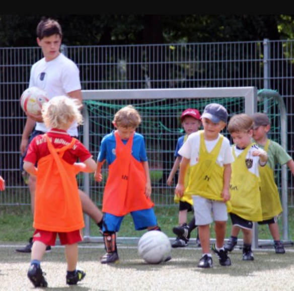
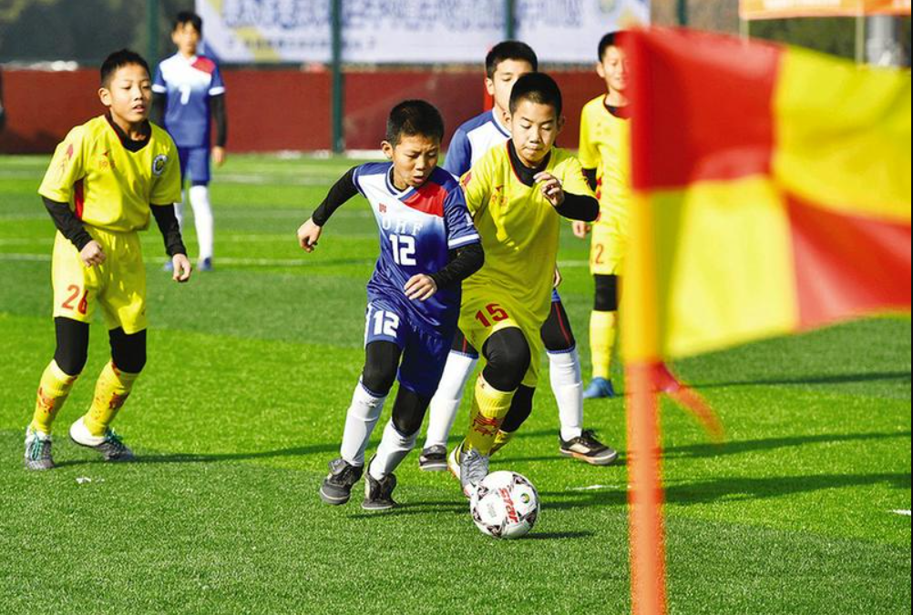

我们做青训的目的，说白了就是想让孩子未来成长为职业球员后在比赛中拿出更好的表现，因此光依靠训练是不够的，不断地比赛才能帮助孩子更好的成长。
在慕尼黑足球学校（以下简称MFS）的理念中，每堂训练课都应该以比赛作为结束。
孩子们的注意力是有限的，一些技术、协调性练习设计的再有趣味性，也比不上比赛对孩子的吸引力，在训练后的比赛，可以视为对孩子的一种“奖励”，抵消他们在训练中的逆反情绪，让他们长期保持对足球的热爱。

此外，训练中的实战分组对抗是对前面训练环节很好的巩固与补充。拿我们的青训100课第一课举例吧，训练课内容见视频。
原文含嵌入视频，本地未保存。
第一课大体分为传球练习、协调与速度练习、实战分组对抗赛三个环节，前两个环节很好理解，本节课的重点是让球员掌握“假传转身”与“拉球转身”两个动作技巧，因此在最后的比赛环节中需要巩固这两个技巧。
比赛人数可以是3v3、4v4、5v5等，根据参训人数分配即可，比赛时候，前20分钟，教练可以通过语言或者哨音发出信号，提醒持球球员“这是一个适合做假传转身的时机”；
或者可以设定一个规则，“在使用假传转身或拉球转身后的射门才能够得分”等。

如此，不仅能让球员学会做这两个动作，还可以让他们更好的把握动作在比赛中的应用场景与使用时机。
总之，无论通过何种方式，教练要提醒球员在比赛中运用所学，尤其是动作技巧，我们要告诉孩子，只有能在比赛场景中应用出来，才是真正掌握了这个动作。
当然，最后还是应该留给孩子10-15分钟的自由比赛时间。
光依靠每节训练课中的比赛环节显然是不够的，我们还要将孩子按照年龄与水平分成不同的队伍，寻找其他年龄水平相近的队伍进行比赛。
注意，这里的比赛一定是正式的比赛，采用正式比赛规则，最好要安排裁判组。
国内一些组织的比较好的城市，可以安排队伍参加当地足协举办的联赛，整体组织不好的，也要尽量练习其他学校或者青训机构约赛，保证孩子们能每周踢一场正式比赛是比较理想的。

如此，让球员从小适应比赛的感觉，逐步提升比赛的级别，一步一步成为职业球员。
另外，组织或者带队参加比赛的时候，教练心里一定要明白，这些比赛的首要目的是为了帮助孩子更好的成长，因此胜负应当放在第二位。
举个例子，比如你的队伍中某个球员发育较早，身体素质明显强于同龄人，如果把他固定咋中锋或是中卫的位置，放任他在比赛中利用身体“欺负”对手，短期内看，我们或许会因此多取得几场胜利。
但是，如此一来这名球员的思维会固化，他会习惯用简单的方式解决问题，他的战术思维无法得到开发，各种技术的运用能力也会下降，等到其他球员身体也发育起来后，他就会无所适从，从而限制这名球员的发展上限。
正确的做法应该是，要让球员轮换起来，比赛时每个位置都要踢，了解每个位置的职责。我们可以告诉孩子，一名优秀的前锋必须要知道后卫是怎么想的。
同时，我们需要在场上限制孩子“一招鲜吃遍天”。
除了上述的例子外，还有很典型的一个情况：
现在很多队伍中都没有专业的门将，尤其是低年龄段的比赛中，一些孩子就会通过远射的方式频频得分，甚至中圈开球就直接起脚射门。
这样的方式或许会帮助我们取得眼下的胜利，但长远来看，不利于球员的成长，作为教练，如果队里出现这样的球员，我们可以在比赛前给他们加一个小规则，比如必须把球传入或者带入禁区才能起脚射门。

文字与图片版权归各自权利人所有；排版根据抓取内容整理。